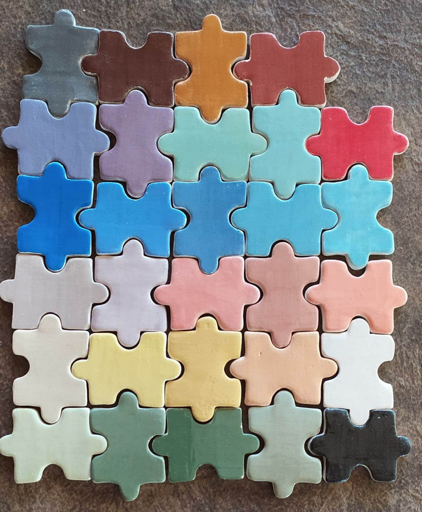
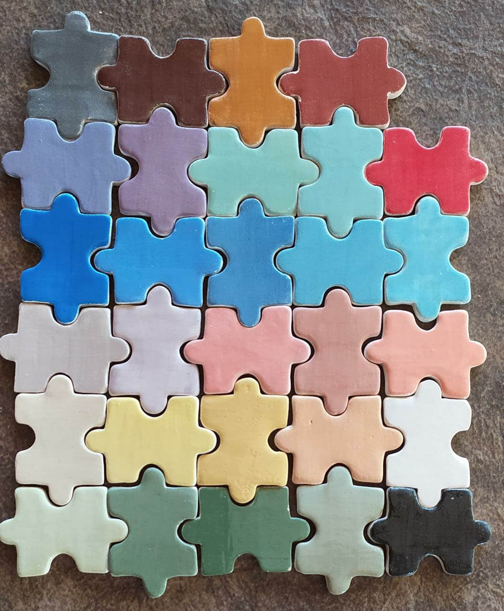
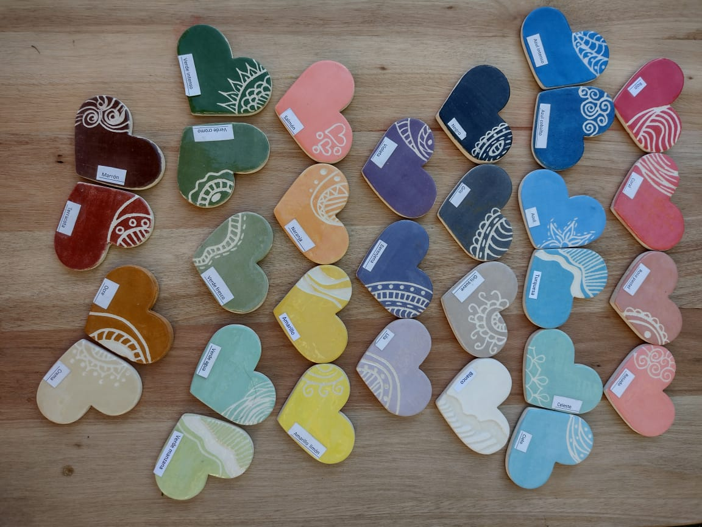

Color pleno
Con la ayuda de una torneta o simplemente a mano alzada se puede aplicar un color pleno
Con la ayuda de una torneta o simplemente a mano alzada se puede aplicar un color pleno
Los engobes se pueden usar para realizar dibujos de distintos colores, con pequeños detalles y hasta se puede esgrafiar sobre ellos.
El esgrafiado significa hacer marcas, es decir dejar un dibujo sobre una superficie que hemos pintado previamente
